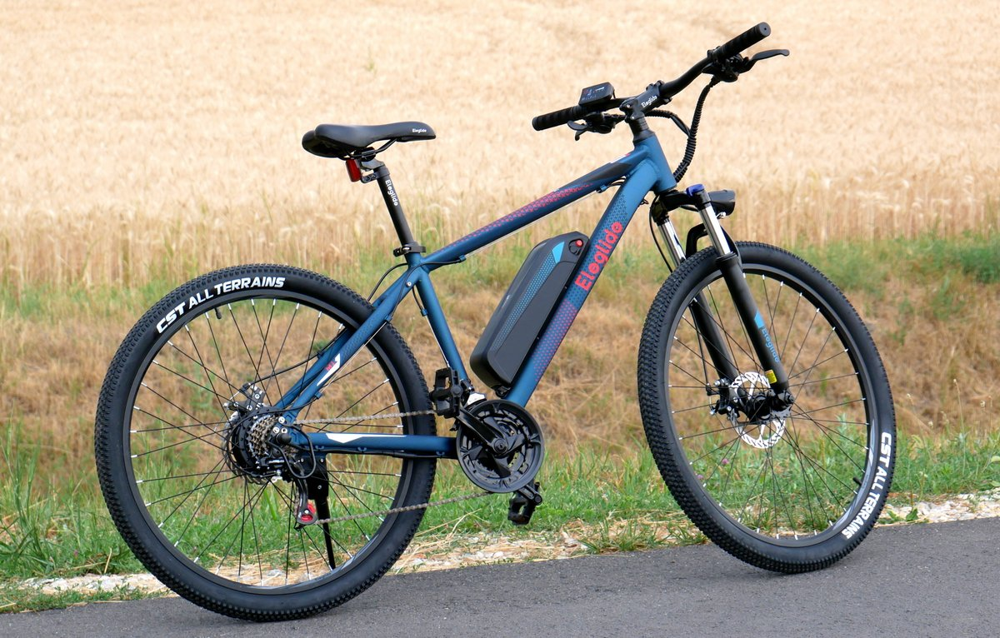
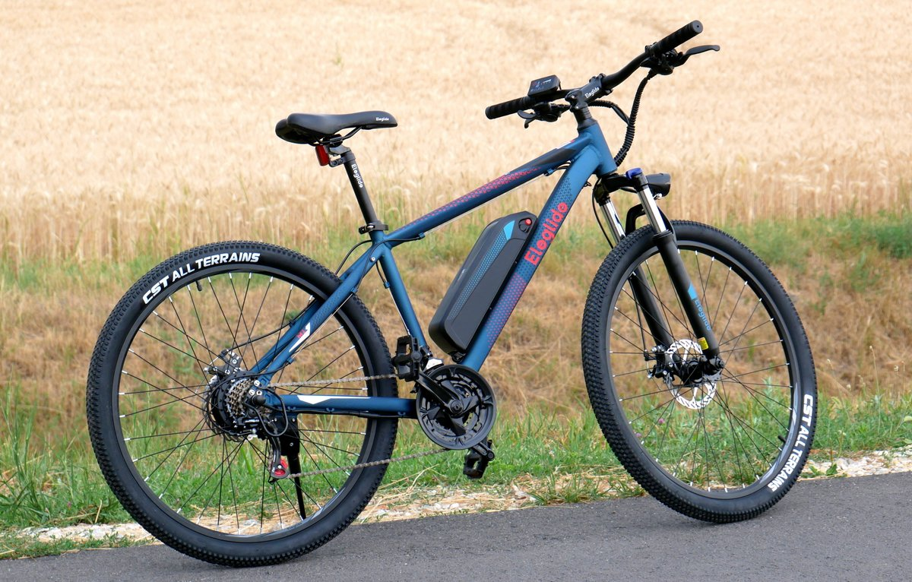

Önéletrajz
Csík Szabolcs Alex
Kapcsolat
Mobil:
+36702421586
Email:
alexszabi04@gmail.com
Nyelvismeret
Angol- Jól beszélem a nyelvet, a középfokú nyelvvizsga megszerzésére törekszem.
Képességeim
Excel
Java/Javascript
PowerPoint
HTML
●●●●◌
●●●●◌
●●●●◌
●●●●●
Hobbiaim
 


Profil
- Születési dátum: 2004. Január 23.
- 18 életévemet betöltöttem
- B-kategóriás jogosítvány
- Ápolt, igényes megjelenés
- Felettesekkel és tanárokkal való tisztelettudó viselkedés
Szakmai Tapasztalat
- Hirös Ízek Kft.
- Hirös Ízek Kft.-nél dolgoztam nyáriszünetben.
- Fürge Diák Iskolaszövetkezet - Kecskemét
- Som-Plast Kft.-nél dolgoztam mint diákmunkás.
Tanulmányok
- KECSKEMÉTI SZC KANDÓ KÁLMÁN Technikum diákja vagyok, Szoftverfejlesztő/tesztelő informatikus szakon.
- Kecskeméti Szakképzési Centrum GRÓF KÁROLYI SÁNDOR Technikumba vettek fel és végeztem el az angol 1 éves felkészítőt.
- A Kecskeméti Vásárhelyi Pál Általános Iskola és AMI - Móricz Zsigmond Általános Iskolája, Hetényegyháza általános iskolában végeztem négyes feletti átlaggal.
- Logischool (Dr.Code) 4 éves képzés elvégzése
Tulajdonságaim:
- Szeretek csapatban dolgozni
- Céltudatos vagyok
- Nagycsaládban nőttem fel, ezért az alkalmazkodás nem okoz gondot
- Jó kommunikációs képességem van
- Megoldásban gondoldolkodom
- Amatőr kerékpározás hobbi szinten - cél versenyekre elindulás